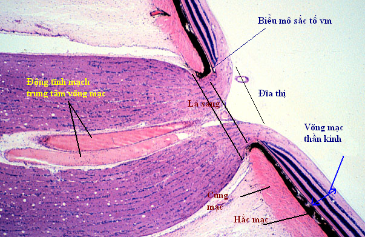

+ Dây thần kinh thị giác

Hình: Đường đi thị thần kinh

Hình: Cấu tạo mô phỏng đầu thị thần kinh
( CRA: Động mạch trung tâm võng mạc, CRV: Tĩnh mạch trung tâm võng mạc,
SPCA: Động mạch mi sau ngắn, PV: Tĩnh mạc Pial, ZH: Vòng Zinn-Haller
Trích từ Glaucoma - Science and Practice)

Hình: Tiêu bản đầu thị thần kinh